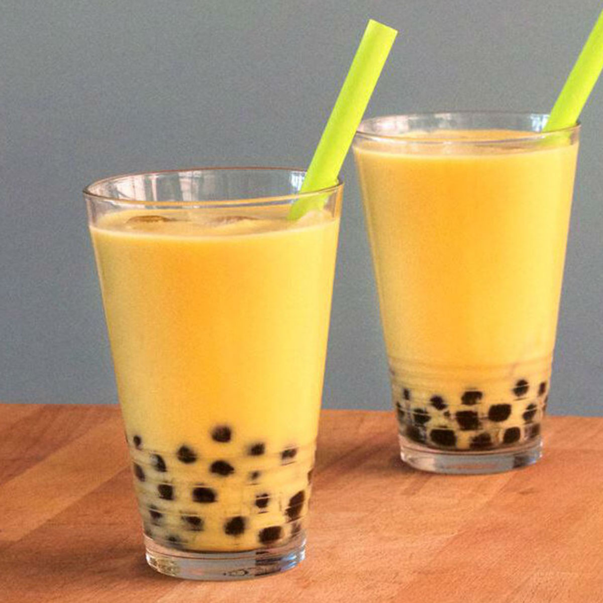
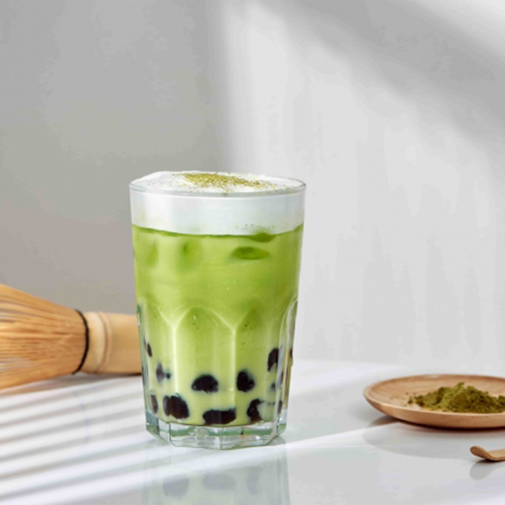

About
Though various boba drinks are available, the most common concoction includes a tea base that’s combined with milk or fruit and is usually prepared over a bed of sweet boba pearls. There are boba milk teas, green teas, black teas, smoothies, coffee drinks, and a slew of other preparations that can be enhanced with rich flavors that range from sweet to savory. Milk tea is usually prepared with powdered creamers, although fresh milk is used in some recipes.